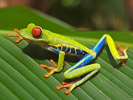
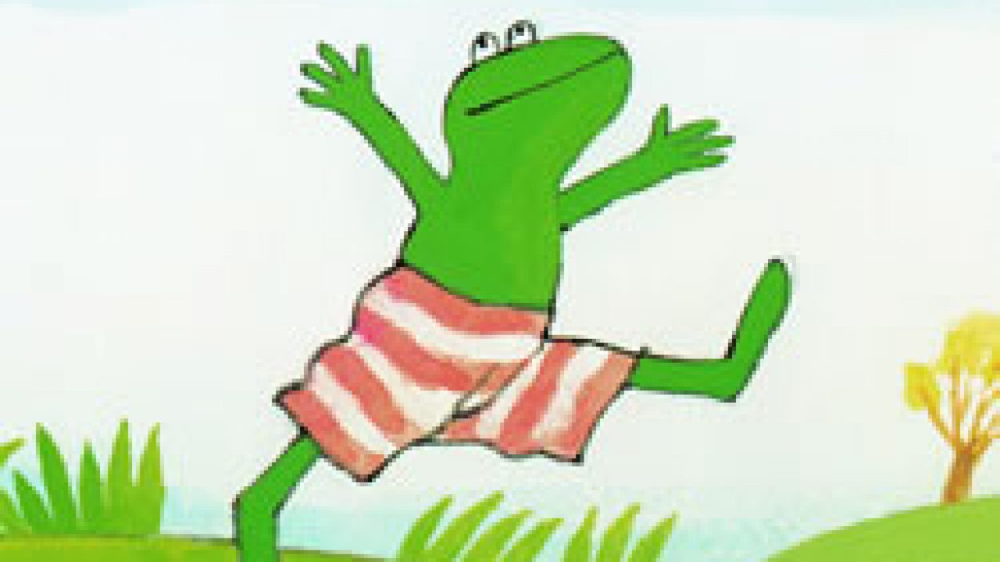

Kikkers
Kikkers (Anura) zijn een van de drie groepen van amfibieën, naast de salamanders (Caudata) en de wormsalamanders (Gymnophiona).[2] Kikkers zijn hiervan verreweg de grootste groep; van de ongeveer 7790 soorten amfibieën behoort grofweg 88% tot de kikkers. Er zijn tegenwoordig ruim 6860 verschillende soorten kikkers beschreven.[3] Kikkers hebben een vrijwel wereldwijde verspreiding en leven in sterk uiteenlopende habitats.
Kikkers behoren tot de gewervelde dieren, ze hebben vier poten maar geen staart en verschillen hiermee van de meeste andere amfibieën. Alle kikkers hebben een afgeplat, peervormig lichaam en uitpuilende ogen. De kop en bek zijn breed, de lange achterpoten zijn sterk gespierd en goed ontwikkeld. Kikkers zijn de enige dieren die een kwaakblaas hebben en hiermee soortspecifieke geluiden maken om elkaar te lokken. Net als andere amfibieën zijn kikkers koudbloedig, hierop is zowel de bloedsomloop als de ademhaling aangepast. Een aantal soorten houdt een zomerrust of winterslaap om erg warme respectievelijk koude jaargetijden te doorstaan.
De ontwikkeling van de larve tot volwassen kikker is uniek binnen de gewervelden. Kikkers doorlopen een volledige metamorfose waarbij de larve er totaal anders uitziet dan de volwassen kikker.
Kikkers eten een breed scala aan prooien, meestal kleine dieren als insecten en andere ongewervelden. De grotere soorten eten soms kleine gewervelden. Kikkers hebben daarnaast vele natuurlijke vijanden zoals vissen, vogels, zoogdieren en reptielen. Veel soorten worden direct of indirect bedreigd door de mens, een aantal soorten is hierdoor sterk bedreigd of uitgestorven.
Sinds 1985 is het aantal beschreven amfibieën met meer dan een derde toegenomen, dit geldt met name voor de kikkers. De indeling van de kikkers is door deze constante aanvoer van nieuwe inzichten sterk aan verandering onderhevig. Het feit dat sommige soorten pad worden genoemd is hier een voorbeeld van, dit heeft tegenwoordig geen wetenschappelijke basis meer.[4] In dit artikel worden alle soorten daarom verder met kikker aangeduid.

In het Nederlandse taalgebied
In de Antillen, Suriname, Nederland en België komen ongeveer 125 verschillende soorten kikkers voor die vanwege de geografische variatie en daarmee gepaard gaande sterke verschillen in begroeiing, luchtvochtigheid en temperatuur tot verschillende families behoren en een grote vormenrijkdom kennen.
In Europa leven ongeveer vijftig soorten waarvan er een aantal ook in Nederland en België voorkomt. In gematigde streken zoals West-Europa komen relatief minder soorten voor dan in subtropische streken. Vrijwel alle soorten die in de Benelux voorkomen zijn hier vrij zeldzaam tot sterk bedreigd. Alle soorten zijn beschermd en vele staan op de rode lijst. Voor veel soorten geldt echter dat ze in andere delen van Europa nog algemeen voorkomen. Met een aantal soorten gaat het in Nederland de laatste tijd beter, omdat natuurbeheer en verbeterde waterkwaliteit zijn vruchten af begint te werpen.[8] Een voorbeeld hiervan is de boomkikker (Hyla arborea) hoewel alleen plaatselijke successen zijn geboekt. In Nederland en België komen elf soorten inheemse kikvorsachtigen voor die tot verschillende families behoren. De Amerikaanse stierkikker is een exoot uit Amerika.
Op de Nederlandse Antillen (ABC-eilanden) komen oorspronkelijk geen kikkers voor, de eilanden zijn geografisch gezien te geïsoleerd. Wel zijn enkele soorten geïntroduceerd, zoals de fluitkikker Eleutherodactylus johnstonei (familie Eleutherodactylidae) op Curaçao en Pleurodema brachyops (familie fluitkikkers) op Aruba[9]
In Suriname komen iets meer dan honderd soorten kikkers voor uit twaalf verschillende families. De soorten behoren tot de families Aromobatidae (5), Brachycephalidae (7), padden (6), glaskikkers (5), pijlgifkikkers (3), fluitkikkers (22), smalbekkikkers (8), tongloze kikkers (3), echte kikkers (1) en ten slotte de boomkikkers, waartoe de meeste soorten behoren (42). Het geslacht Leptodactylus (Leptodactylidae) is met achttien soorten het rijkst vertegenwoordigd. Van sommige soorten wordt vermoed dat ze in Suriname voorkomen maar dit is niet zeker, zoals de eerder vermelde soort Eleutherodactylus johnstonei.[2]

Kikkers of padden?
Kikkers en padden werden lange tijd beschouwd als twee aparte groepen binnen de Anura. Soorten met een gladde huid en een gespierd lichaam die meer bij het water leven en goed kunnen springen door de langere achterpoten werden kikker genoemd. Soorten met een ruwe huid en een gedrongen lichaam die meer op het land leven en slecht kunnen springen door de kortere achterpoten werden pad genoemd. Dit was ook terug te voeren op de taxonomische indeling; alle soorten met een ruwe huid behoorden tot de familie padden (Bufonidae) en alle andere soorten behoorden tot families die kikkers werden genoemd.
Tegenwoordig is bekend dat een ruwe of een gladde huid, langere of kortere achterpoten en het bezit of ontbreken van het vermogen om te springen weliswaar belangrijke verschillen zijn, maar niets te maken hebben met de afstamming van de kikkers. Soorten met een ruwe huid zijn soms ontstaan uit soorten met een gladde huid en vice versa; er zijn ook soorten met een gladde huid die verwant zijn aan soorten met een ruwe huid. Hetzelfde geldt voor de op het land of juist op het water aangepaste levenswijze, de lengte van de achterpoten en het vermogen om te springen. Een voorbeeld van een dergelijke mengvorm is de geelbuikvuurpad die een ruwe huid heeft, maar niet op het land leeft en juist sterk op een leven in het water is aangepast. Bij de boomkikkers, een familie waarvan de meeste soorten boombewonend zijn en een gladde huid hebben, komen soorten voor die een ruwe huid hebben en meer op de bodem actief zijn en niet in bomen leven. Al deze kenmerken hebben – zo weet men tegenwoordig – niets te maken met een gemeenschappelijke voorouder, maar komen verspreid voor binnen de gehele orde van de kikvorsachtigen en zijn een vorm van convergente evolutie.
De familie Bufonidae (die in het Nederlands werd aangeduid met de padden) kreeg een engere definitie: alleen soorten die in het bezit zijn van een ontwikkeld orgaan van Bidder werden tot de groep van echte padden gerekend. Het orgaan van Bidder is een voortplantingsorgaan dat bij alle kikkers in aanleg aanwezig is, maar al snel degenereert; alleen bij de padden kan het zich volledig ontwikkelen. Het orgaan is bijzonder omdat het mannetjes eicellen kan laten aanmaken en zo als het ware mannetjes in vrouwtjes kan veranderen. Een ander verschil tussen de soorten uit de familie Bufonidae en andere groepen is het ontbreken van tanden, die soorten uit andere families meestal wel hebben. Alle padachtige soorten die het orgaan van Bidder niet hebben zijn ondergebracht in andere families en worden niet langer tot de Bufonidae gerekend. De Nederlandse namen van deze soorten, met als bekendste de vuurbuikpad en de knoflookpad zijn echter niet mee veranderd. Hierdoor draagt een kikker soms de naam -pad, maar wordt beschouwd als padachtige kikker en wordt met kikker aangeduid. Andersom gaat het ook op; de klompvoetkikkers dragen door hun gladde huid de naam -kikker, maar behoren tot de familie echte padden. Hierdoor is het idee om sommige kikkers pad te noemen geheel verlaten en worden alle soorten met kikker aangeduid.